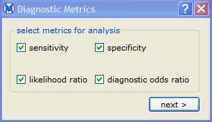
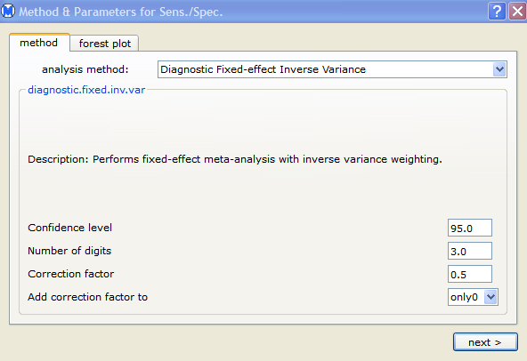
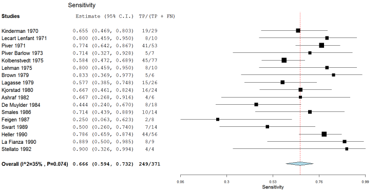
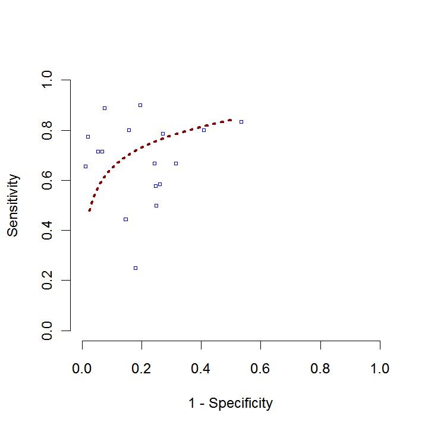

This section provides an example that illustrates how to perform a meta-analysis of diagnostic data. To run the example, do the following steps:

If you select likelihood ratio, both a positive likelihood ratio and a negative likelihood ratio analysis are performed.

Note: If you select neither sensitivity nor specificity, the dialog above is not displayed.
Note: If you select neither likelihood ratio nor diagnostic odds ratio, the dialog above is not displayed.
For each selected method, the results pane displays a summary and forest plot, just as for a meta-analysis of binary data. The forest plot for sensitivity is shown below.

If you selet both sensitivity and specificity, the forest plots for sensitivity and specificity are displayed side-by-side. Also, an ROC plot of sensitivity and specificity is displayed, as shown below.

Similarly, if you select likelihood ratio, the positive and negative likelihood ratio forest plots are displayed side-by-side. If you select diagnostic odds ratio, a single forest plot is displayed. | Example - Binary Data | Adding a Covariate | |